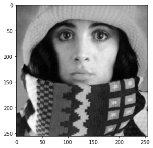
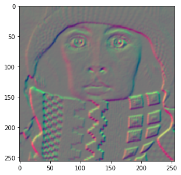
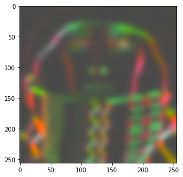
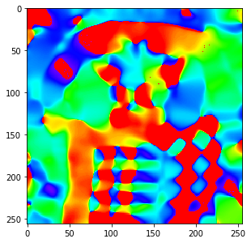
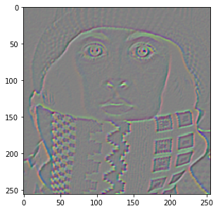

Tensor images and color images
Images can have any number of channels, organized as either a vector or a matrix. We use the name “tensor images” to encapsulate both of these concepts. A tensor is a generalization of matrix. A rank-0 tensor is a single number, a scalar. A rank-1 tensor is a vector. A rank-2 tensor is a matrix. Tensors can have any rank, but in the DIPlib library we are currently limited to ranks up to 2 (we have not seen higher rank tensors used in Image Analysis, if such a use arises, we can extend the implementation to support those too).
Note that the image itself is not a matrix or a tensor. An image can be seen as a multi-dimensional array, but we don’t apply matrix multiplication or other linear algebra on the image as a matrix. But each pixel can be a matrix, or a vector, and we can apply linear algebra on the pixels.
Images with a single channel, gray-scale images, are referred to as “scalar images” in DIPlib.
If the channels (i.e. tensor elements) are organized as a vector, it is a “vector image”. Color images are always vector images. Each pixel is a vector that represents a point in the color space.
Below we will see some example for rank-2 tensor images, such as the Hessian matrix and the Structure Tensor.
Some example tensor images
This is a scalar image:
img = dip.ImageRead('examples/trui.ics') img.Show()

We can compute its gradient, which is a vector image:
g = dip.Gradient(img) g.Show()

The vector image is displayed by showing the first vector component in the red channel, and the second one in the green channel.
g has two components:
g.TensorElements() # == 2 g.TensorShape() # == 'column vector'
Multiplying a vector image with its transposed leads to a symmetric matrix:
S = g @ dip.Transpose(g)
S.__repr__() is
<Tensor image (2x2 symmetric matrix, 3 elements), SFLOAT, sizes {256, 256}>
Note how the 2x2 symmetric matrix stores only 3 elements per pixel. Because of the symmetry, the [0,1] and the [1,0] elements
are identical, and need not be both stored. See dip::Tensor::Shape for details on how the individual elements are stored.
Note also that the transposed image is not an image with spatial axes swapped, we transpose the vector or matrix at each pixel.
Local averaging of this matrix image (i.e. applying a low-pass filter) leads to the Structure Tensor:
dip.Gauss(S, out=S, sigmas=5) S.Show()

We can still display this tensor image, because it has only 3 tensor elements, which can be mapped to the three RGB channels of the display.
The Structure Tensor is one of the more important applications for the concept of the tensor image. Here we show how to get the local orientation from it using the eigenvalue decomposition. See Why tensors? for some more example applications of the Structure Tensor.
eigenvalues, eigenvectors = dip.EigenDecomposition(S) eigenvalues.TensorShape() # == 'diagonal matrix' eigenvectors.TensorShape() # == 'column-major matrix'
The eigendecomposition is such that S @ eigenvectors == eigenvectors @ eigenvalues.
eigenvectors is a full 2x2 matrix, and hence has 4 tensor elements. These are stored in column-major order.
The first column is the eigenvector that corresponds to the first eigenvalue.
Eigenvalues are sorted in descending order, and hence the first eigenvector is perpendicular to the edges in the image.
v1 = eigenvectors.TensorColumn(0) angle = dip.Angle(v1) angle.Show('orientation')

Note that extracting a column from the tensor yields a vector image, and that this vector image shares data with the column-major matrix image. Transposing a matrix is a cheap operation that just changes the storage order of the matrix, without a need to copy or reorder the data:
tmp = dip.Transpose(eigenvectors) tmp.TensorShape() # == 'row-major matrix' tmp.SharesData(eigenvectors) # == True
A second important matrix image is the Hessian matrix, which contains all second order derivatives. Just like the Structure Tensor, it is a symmetric 2x2 matrix:
H = dip.Hessian(img) H.Show()

Arithmetic with tensor images
We’ve already seen the matrix multiplication @. Other arithmetic operators are always applied on a per-sample basis:
addition + and subtraction -, multiplication *, division / and remainder %, exponentiation **,
bit-wise operators &, |, ^, and comparison operators ==, !=, >, >=, <, and <=.
For example, dividing S above by itself, S / S, yields a tensor image of the same sizes and shapes as S.
Each sample in the left-hand size is divided by the corresponding sample in the right-hand side.
But if we divide S / eigenvectors, where S has 3 samples organized as a symmetric 2x2 matrix, and eigenvectors
has 4 samples also organized as a 2x2 matrix, then the operation will see the two images as 2x2 matrices, and
will produce as output a full 2x2 matrix image (with 4 samples).
Finally, dividing S / eigenvectors.TensorColumn(0), there is no way to match up the two tensor shapes,
so an exception is raised. There is no broadcasting (or singleton expansion as it’s called in the DIPlib documentation)
for tensor elements, unless one of the images is a scalar: S / eigenvectors(0) works as expected.
Oftentimes, one needs to use a single pixel as one of the operands. For example, to add the same value to each pixel
in the image. We can of course use a scalar value: g + 5. To create a column vector pixel, simply provide a list:
g + [1, 5]. Because the + operator works element-wise, a row vector and a column vector can be added together:
dip.Transpose(g) + [1, 5]. But if one needs a matrix, or a row vector, it is a bit more complex to create.
For example, g @ [[1, 5]] does not work. Also, a NumPy array is interpreted as an image, not as a tensor pixel,
so cannot be used either. Instead, use the dip.Create0D() function:
p1 = dip.Create0D([1, 5]) # a column vector p1.Transpose() # a row vector p2 = dip.Transpose(dip.Create0D([1, 5])) # also a row vector p3 = dip.Create0D(np.array([[1, 5]])) # also a row vector
To create a special tensor shape, you can use dip.Image.ReshapeTensor():
p4 = dip.Create0D([1.4, 0.5, -1.0]) p4.ReshapeTensor(dip.Tensor("symmetric matrix", 2, 2))
Color images
Color images are vector images where the vector represents a point within the gamut in the (3 or 4-dimensional) color space.
When reading in a color image through DIPlib functions, the color space will typically be set correctly. But if it isn’t, you can manually set it:
img = dip.Image((256, 256), 3) # a 3-channel image img.ColorSpace() # == '' (there's no color space set) img.SetColorSpace('sRGB') # define the image's color space
dip.Image.SetColorSpace() will overwrite whatever the current color space name is, it will not check that
the image has the right number of channels, and it will not touch the pixel data.
dip::ColorSpaceManager is the class in the DIPlib library that takes care of color space conventions
and conversions. In PyDIP, dip.ColorSpaceManager is a sub-module that references an internally stored
global dip::ColorSpaceManager object. You can query the existence and properties of a color space,
but not define new ones (as that requires writing C++ code). dip.ColorSpaceManager.Convert() converts
from any known color space to any other color space, including gray scale. See dip::ColorSpaceManager
for a list of currently known color spaces.
The conversion functions assume a specific gamut (each color space defines the range of the values for each channel).
These values do not change with the data type of the image. For example, a gray-scale image is assumed to be in
the range 0-255, whether the image is UINT8, SINT16 or DFLOAT. But the range of values is irrelevant when
displaying, as the image display can scale data (see Displaying Images). That is, the gamut is only relevant when
applying color space conversions.
dip.ColorSpaceManager.IsDefined('L*a*b*') # == True dip.ColorSpaceManager.CanonicalName('L*a*b*') # == 'Lab' dip.ColorSpaceManager.NumberOfChannels('L*a*b*') # == 3 img = dip.ImageRead('examples/DIP.tif') img.ColorSpace() # == 'sRGB' out = dip.ColorSpaceManager.Convert(img, 'L*a*b*') out.ColorSpace() # == 'Lab'
Note that PyDIP’s image display will convert color images to sRGB for display, so you always see the colors as they are intended.
It is also possible to set the white point, which will affect some color space conversions:
dip.ColorSpaceManager.SetWhitePoint(dip.ColorSpaceManager.IlluminantD50) out2 = dip.ColorSpaceManager.Convert(img, 'L*a*b*')